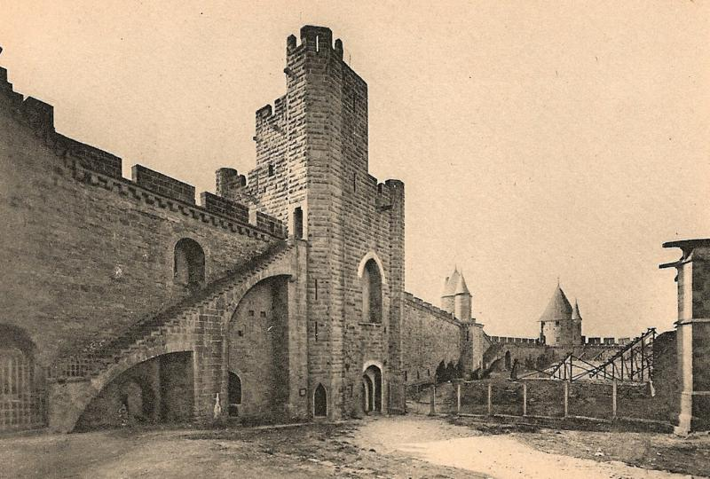
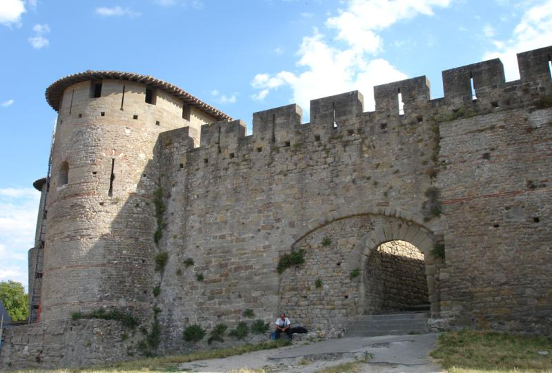

L'enceinte est percée de quatre portes principales donnant accès à l'intérieur de la Cité. Les portes sont réparties aux quatre points cardinaux.
La porte narbonnaise construite sous le règne de Philippe III de France
La porte Narbonnaise, située à l'est, est construite vers 1280 durant le règne de Philippe III le Hardi. Elle doit son nom à son orientation vers Narbonne et succède au château narbonnais, un château aujourd'hui disparu qui contrôlait la principale entrée de la ville. Le château Narbonnais était tenu aux xie et xiie siècles des Trencavel par la famille de Termes. Au 19
Au sud, la porte Saint-Nazaire est aménagée dans la tour du même nom, l'une des deux tours carrés de la Cité. C'est un dispositif de défense complexe ; l'ouvrage était très abîmé et Viollet-le-Duc le reconstitua entre 1864 et 1866. La tour protège la cathédrale Saint-Nazaire située juste derrière à 25 mètres dans la Cité. Elle est équipée de quatre échauguettes ; le passage donnant accès à la lice et à la Cité comporte un coude de 90 degrés. Chaque entrée de ce passage est protégée par des systèmes de défense : mâchicoulis, herses et vantaux. La tour possède deux étages bien aménagés pour le stationnement de la garnison avec une cheminée et des corps de placard. La plate-forme couronnant la tour permettait de recevoir un engin de guerre à longue portée.
À l'ouest, la porte d'Aude fait face au fleuve du même nom. Elle est située près du château comtal. Cette porte se prolonge par la barbacane de l'Aude détruite en partie en 1816 pour construire l'église Saint-Gimer. Seule la rampe entourée de murs crénelés subsiste. Le système défensif de cette porte était complexe. De hautes arcades cachent de fausses portes ne menant nulle part : ce dispositif était destiné à tromper l'ennemi88. De plus, de nombreux couloirs en lacet possèdent différents paliers créant une souricière dans laquelle les assaillants se trouvaient bloqués et pouvaient être attaqués de toutes parts. La porte de l'Aude combine des systèmes de défense passive et active d’une grande sophistication.
La rampe, qui partait de la barbacane disparue, donne accès à cette porte. Elle monte la pente raide de l'ouest en faisant des lacets et traverse une première porte puis une seconde porte. L'avant-porte défend cet accès, situé entre l'enceinte intérieure et extérieure. L'enceinte intérieure est à cet endroit surélevée et épaulée d'un triple contrefort construit au 13
Au nord, la porte du Bourg ou de Rodez donnait sur l'ancien bourg Saint-Vincent. Elle est directement creusée dans l'enceinte et était défendue par la barbacane Notre-Dame et la tour Mourétis. La porte, assez modeste, est percée dans les remparts entre deux tours. Elle possède très peu de défenses. À l'époque des Wisigoths, la porte était protégée par une sorte d'avant-corps dont une muraille se prolongeait vers le bourg Saint-Vincent. Cet édifice a été remplacé par la suite par une barbacane sur l'enceinte extérieure, la barbacane Notre-Dame.
